01QUALITY
現場視点で磨き上げた高品質ユニフォーム
ストレッチ／高視認／制電／空調服など、作業環境に最適化した機能性。アラミド防炎・綿防炎・チェンソー防護衣など特殊作業服のラインナップも豊富で、過酷な現場でも長時間着用に耐える設計を提供します。
Uniforms that protect those who wear them, and enrich the environments they work in.
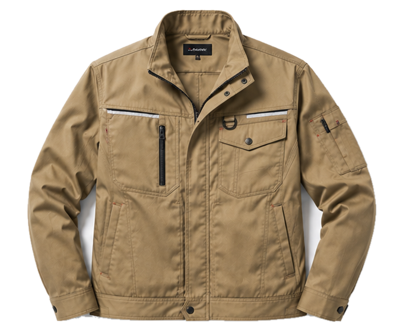
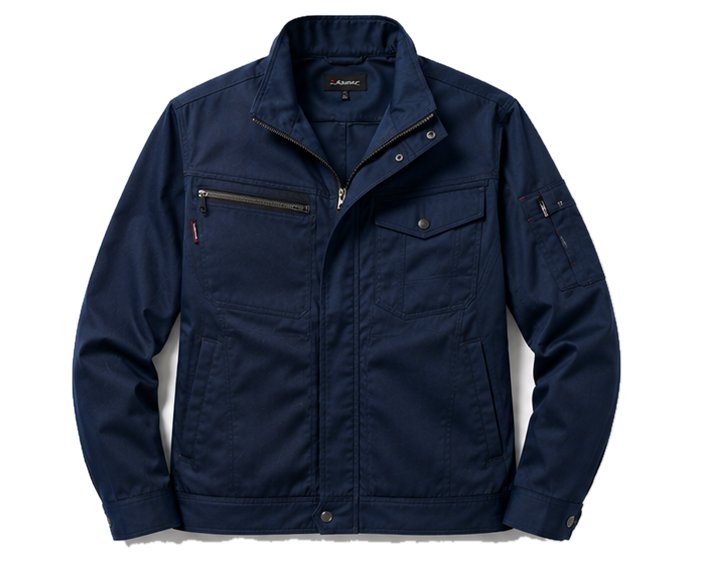
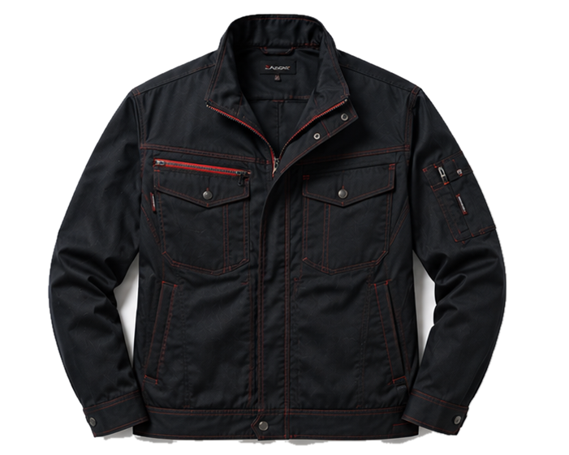
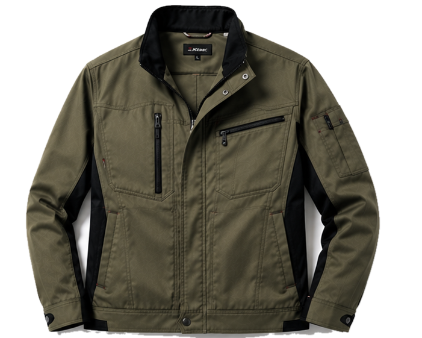
着る人を守り、
働く環境を豊かにする。
1947年、神戸・長田の地にトモヤ洋裁店として創業した当社は、戦後復興のさなか、「働く人々が安心して使えるユニフォームを」という想いを礎に歩み始めました。それから78年、時代とともに作業着の役割は変わり、安全性・機能性・デザイン性が問われる時代となりました。
私たちは、制服を単なる衣服ではなく、企業の理念を体現し、着る人と組織の "誇り" をつくる広報ツールである と捉えています。さらに、デジタル技術と熟練の職人技を融合させ、量産でも一着一着に最適なサイズと機能性を届けることを使命としています。
これからも、現場の声に寄り添い、確かな品質とものづくりの知見、そして CLO・AI採寸・TANQ などの先端技術を組み合わせ、貴社と現場で働く方々の双方にとって最良の一着を提案してまいります。今後ともご愛顧を賜りますよう、お願い申し上げます。
神戸・長田に芽吹いた一つの洋裁店から、海を超え、技術を重ね、トモヤは歩み続けてきました。 その軌跡は、日本のユニフォーム産業の歴史と重なります。
戦後の神戸・長田にて、創業者がオーダー仕立て業を開始。
神戸市長田区二葉町へ移転、製造規模を拡大。
国内生産体制を確立し、量産力を強化。
法人化により、業務用ユニフォーム卸への展開を本格化。
事業拡大に伴い、現社名へ。
海外生産拠点を開設、コスト最適化と短納期対応力を獲得。
神戸の現本社にて、企画・営業・物流機能を統合。
事業領域の拡大に対応し、機能を分散・拡張。
TANQ／CLOバーチャル／AI採寸／BRING Uniform 等を駆使し、次の時代へ。
JR神戸線「新長田駅」より徒歩7分／神戸市営地下鉄海岸線「駒ケ林駅」より徒歩1分
全国出荷／法人直販・卸／オンラインショップ／FAX・電話・Web フォーム対応
ストレッチ／高視認／制電／空調服など、作業環境に最適化した機能性。アラミド防炎・綿防炎・チェンソー防護衣など特殊作業服のラインナップも豊富で、過酷な現場でも長時間着用に耐える設計を提供します。
CIカラーやロゴ刺繍、別注パーツを活かしたデザイン提案でブランド価値を向上。CLOによるバーチャル3Dデザインで決定前の試着・確認が可能。AI自動採寸と独自システム「TANQ」により遠隔地・多拠点でもサイズ精度を担保します。
作業服から安全靴・ヘルメット・各種保護具まで、現場で必要な装備をワンストップで調達可能。発注の手間とコストを削減し、運用フェーズでは寸法直し・補修・在庫管理にもご対応します。
製造・医療・警備・消防・特殊現場まで、業種に応じたユニフォームを取り揃えています。さらにチェンソー防護衣・学生服など、専門領域にも対応します。
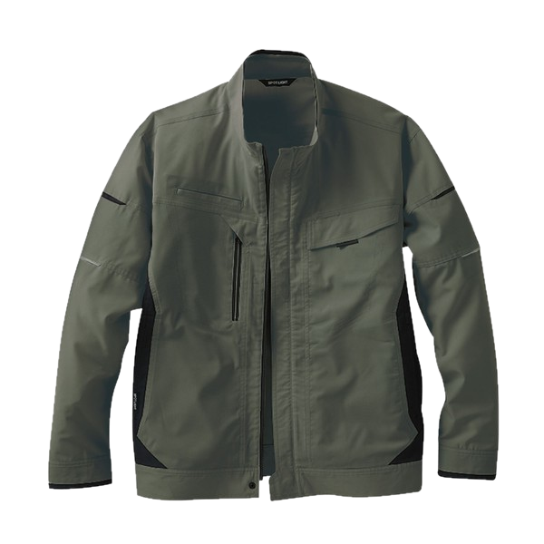
Workwear
上着・ポロシャツ・防寒着・ベスト類
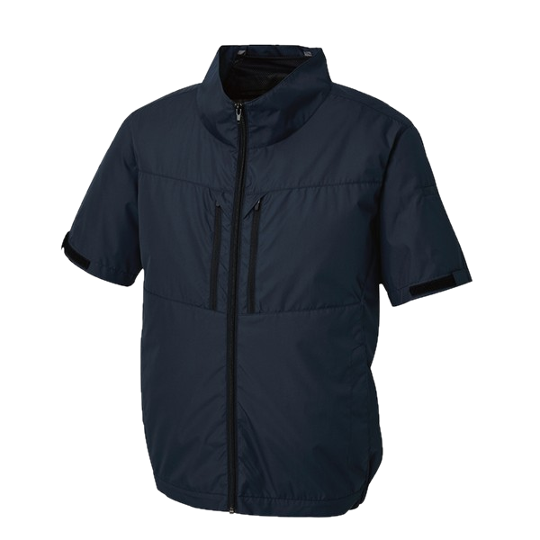
Cooling
空調服／ペルチェ／注水ベスト／氷点下ベスト
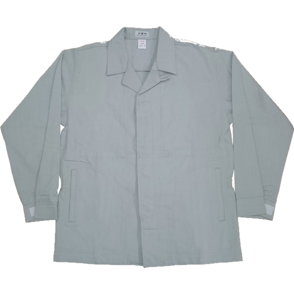
Flame Retardant
アラミド・綿防炎（制電機能付き）
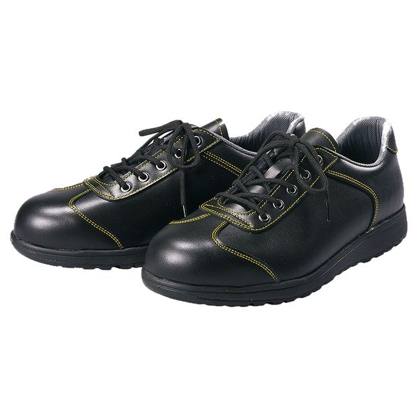
Safety
安全靴／スニーカー／ヘルメット／保護具
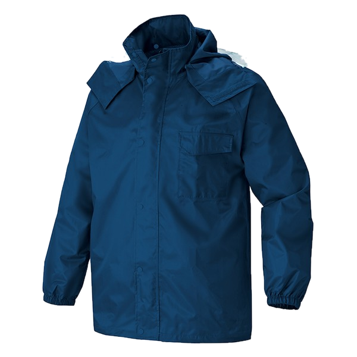
Rainwear
屋外作業・建設現場向け高耐久
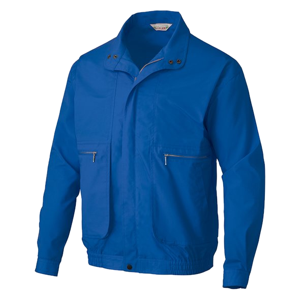
Event
ブルゾン／Tシャツ／オリジナル販促
Medical
スクラブ／医療・介護現場向け
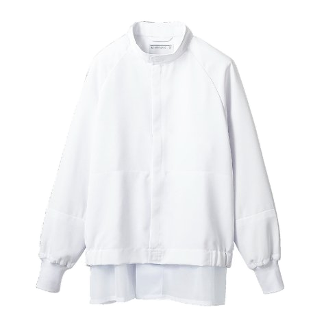
Food / Service
コックウェア／衛生白衣／サービス制服
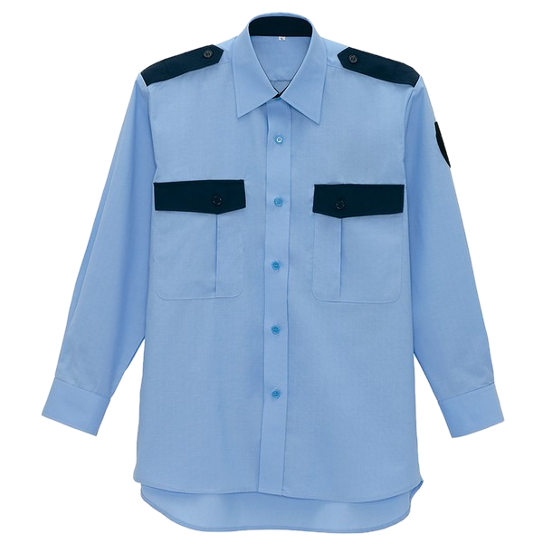
Security
視認性と耐久性を両立した警備ユニフォーム
制服は、企業の "第一印象" をつくる広報ツール。トモヤは「見た目」だけでなく 「共感」をデザインし、応募・定着の両面で採用力を底上げします。
制服導入企業の約9割が、社内にポジティブな効果を実感。
ユニフォームは「採用説明会」「社員集合」「モチベアップ」のすべてに作用します。
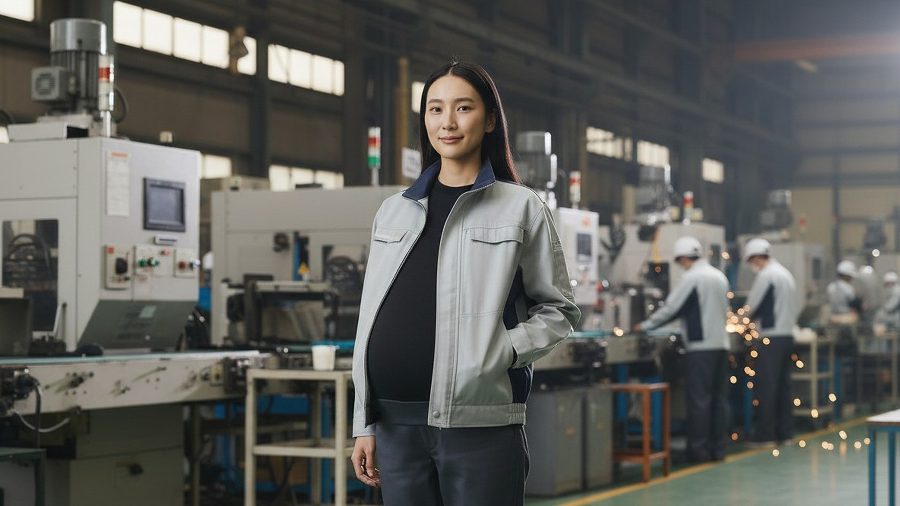
事例 01 製造業 A社様
他社では別注対応で数ヶ月かかるマタニティ作業服を、ご着用中の作業服を元に仕立て直し。 短納期で納入し、従業員様が必要なタイミングで着用できる体制を構築しました。
事例 02 鉄道事業 C社様
両肩のみ損耗が激しかった綿作業服から、アラミド防炎作業服＋肩補強加工へ移行。 交換頻度の低下でトータルコスト削減、火傷等の労働災害リスクも低減しました。
78年の経験で培ったものづくりの知見に、最新のデジタル技術を組み合わせ、 これまでにない精度・スピード・利便性でユニフォームの導入と運用を支援します。
独自開発したオーダー支援システム「TANQ」が自動採寸機能を搭載。 遠隔地・多拠点の社員でも、スマートフォン1台で正確な採寸が完了し、 そのまま発注フローへ連携します。
ファッション業界の3Dソフト「CLO」を活用し、量産前にバーチャル試着・ ビジュアル提案を実施。色・素材・形状を立体的に確認でき、決定までの 往復回数を削減します。
AI自動採寸とクラウド管理の組み合わせで、1人あたりの作業時間を従来比 約1/3に短縮。サイズ調整・追加発注・在庫管理まで一元的に運用できます。
※ CLO は、ファッション業界向け3Dソフトウェアを用い、3Dによるバーチャル衣装を作成できます。 TANQ・AI採寸・CLOバーチャルデザインの導入可否・運用範囲は、お問い合わせ時にご相談ください。
日本国内の自社工場と、長年のパートナーシップを築く海外3カ国のネットワークにより、 ロットや納期、コストといった多様な要件にきめ細かく対応します。
デザイン・生産・加工・安全具まで、すべてをワンストップで。貴社の制服制定を最初から最後までお支えします。
総務・安全部門の参画で選考委員会を立ち上げます。
カラー・素材・機能をヒアリングし提案軸を明確化。
CLOバーチャル試着を含めた候補をご提案・選定。
刺繍・ワッペン・プリントなど後加工を決定。
現場の着用ルール・支給枚数を設計します。
貴社内の最終承認プロセスを支援します。
最終サンプル作成・従業員向けプレゼン展示。
AI自動採寸／TANQで遠隔も対応。
納品後も補修・寸法直しに対応。
トモヤは「回収リサイクル」と「アップサイクル」の2軸で、ユニフォームの循環を実現します。
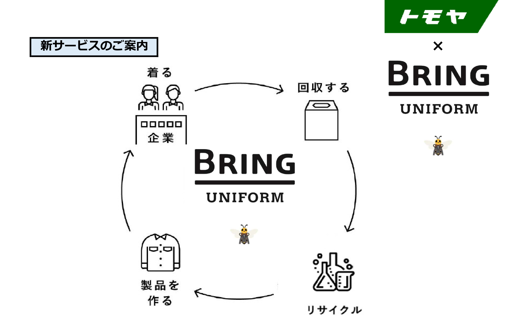
参加企業として BRING Uniform を活用。廃棄ユニフォームを回収し、ポリエステル原料・自動車内装材などに再生します。
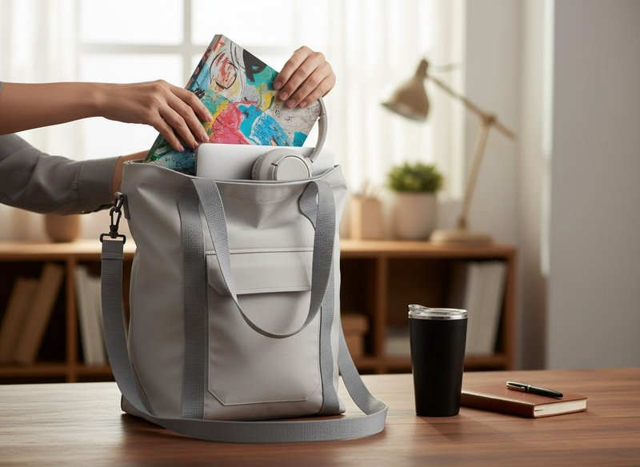
素材をそのまま生かす創造的再利用。廃棄予定の作業服がトートバッグ・PCカバン・サコッシュ等へと生まれ変わります。
神戸モデル標準服を提供するトモヤは、学生服を通して時代の価値観の変化と向き合ってきました。 これからの社会に出る学生たちは「自分で選べる」「多様である」ことを前提にしています。 その価値観は、企業ユニフォームにも求められる時代になりつつあります。
ジェンダーレス化／選択肢の導入／DX・AI採寸の普及──近年、学生服の世界で起きている変化は、 まさにこれから企業ユニフォームに求められる方向性そのものです。
採用環境とジェンダー価値観の変化を背景に、急速にリニューアルが進行。
スカート／スラックス／タイ・リボンの自由選択。AI採寸の標準化。
小〜大学・幼稚園まで、地域の教育現場に寄り添う制服を提案。
学生服で培った「選べる制服」のノウハウを、企業の制服改革にも活用。
— 制服は、働きたいをつくるツール —
TOMOYA · Since 1947
— 全ての人々に、安心安全の機能性ユニフォームを —
© 1947–2026 TOMOYA CORPORATION. ALL RIGHTS RESERVED.